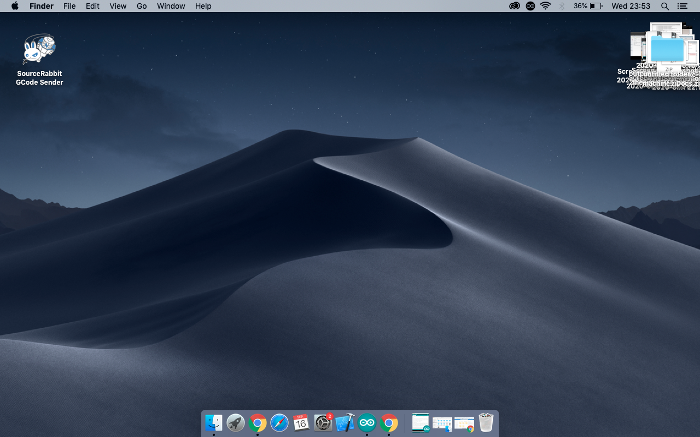
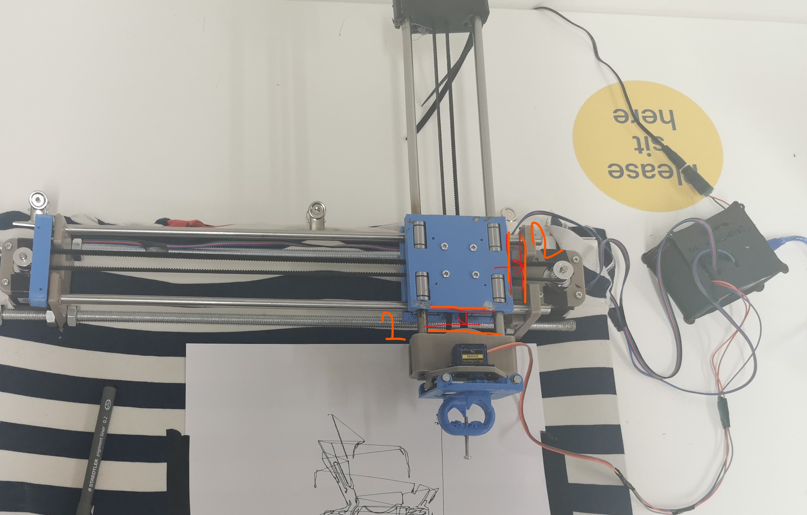
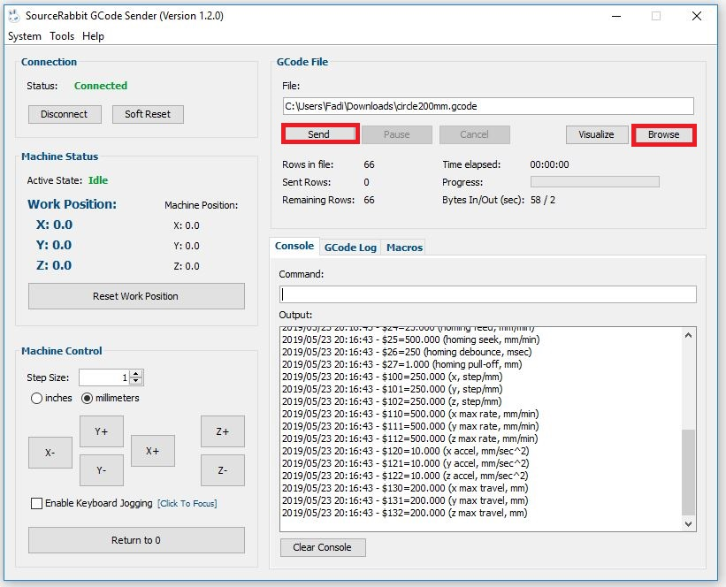

Once you have taken an image by pressing the "save it" button, the still should appear here. (or you can download an image from the web, it should still show here)
-
Scroll to the very bottom, look into the camera and press the "save a still" button
-
when then a black line drawing appears on the canvas press the "download gcode button"
-
Go to the desktop, open sourceRabbbit gcode sender and press connect
 -
Double check the drawing machine making sure the x and and y cross axis are 1-2cm from the corner
 -
Back to source Rabbit, press the "-x" button 2 times, then the "-y" button 2 times and then the "return to 00 button" 1 time.
 -
Press "Browse" and select the filed you downloaded, lineDrawingtogcode.gcode. (it might have a number at the end eg.lineDrawingtogcode(1).gcode).
-
tape paper to the board and press send.
-
if at any point theres an error, just run in the opposite direction!
- down to video